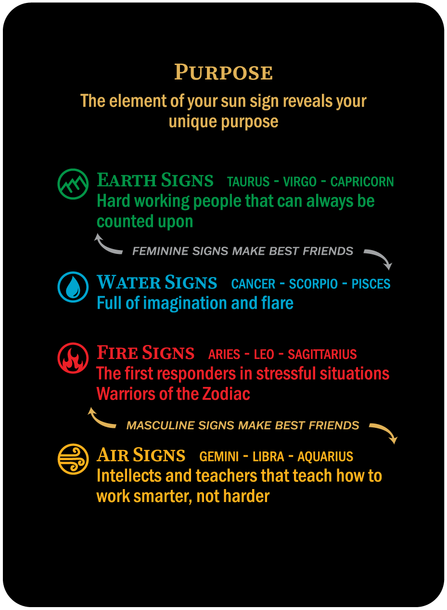
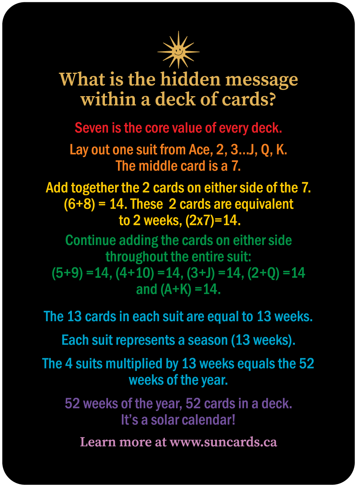
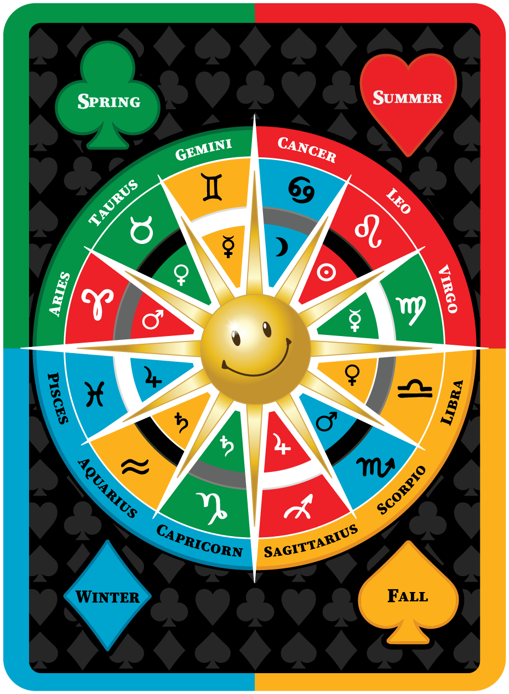

How can learning astrology help me in my life?Astrology is the ancient puzzle that gives us insights into our own attributes and challenges and helps us find our ‘place’ in the world. All of the signs of the Zodiac complement and strengthen each other. We are all stronger as part of a team! Read more |
 | |
A deck of cards = A solar calendarThe four suits represent the four seasons of the year. The 52 weeks of our year correlate with the 52 cards in a deck. Each card (except for the Jokers – we will talk more about them later!) represent a week of the year and every pip on each card represents a day of the week. Tell me more! |
 | |
Th e solar calendar links you to your unique astrologyEvery card in the deck also has a Zodiac sign associated with it. It is a misconception that you get your Zodiac sign from constellations of stars. Your sign is derived from the seasons of the year. People born at different times of the year have different strengths, personalities, and life purposes. Read More! |
 |